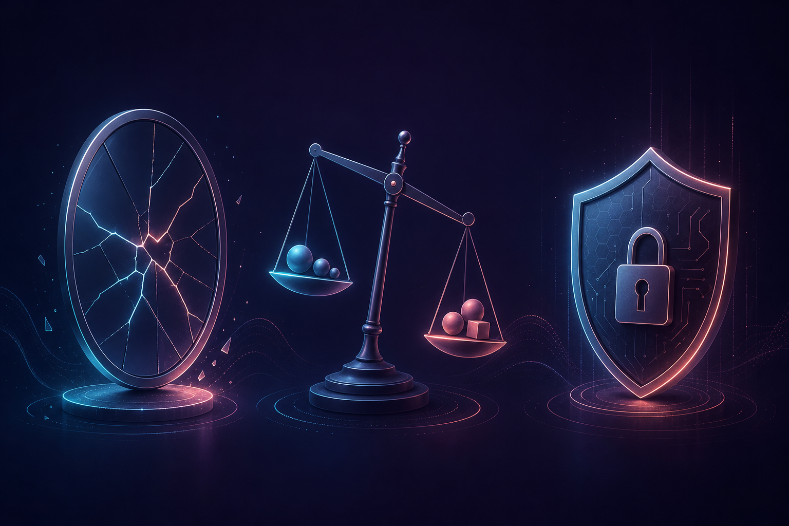

Conceptos básicos · Antes de Cursor
IA con criterio
Entender qué es, cómo pedir y cuándo verificar.
Wilman Montenegro · Primera clase
Hoy vas a aprender
Qué aprenderás en esta sección
01 · Base
IA generativa y modelo
Una IA que crea cosas nuevas: texto, imágenes, audio o video. No solo busca lo que ya existe.
El cerebro entrenado que hace el trabajo. Hay modelos livianos (rápidos/baratos) y fuertes (más caros).
02 · LLM
Large Language Model (LLM)
Modelo de lenguaje grande · No es una base de datosUna IA que entiende y genera texto.
No “busca y encuentra”. Predice la siguiente palabra.
→ siguiente palabra
En tu día a día
¿En qué puedes usar la IA?
Escribir informes, propuestas, mails a clientes, actas y resúmenes sin empezar en blanco
Ideas de publicidad, copys, imágenes, videos cortos y presentaciones para vender más
Entender tablas, ventas, gastos y variaciones; borradores de reportes listos para revisar
Ahorrar tiempo en tareas repetidas: clasificar, ordenar, responder lo frecuente y organizar el trabajo
03 · Prompts
Prompt = lo que le pides a la IA
Es lo que escribes en el chat. Un buen prompt tiene 4 partes:Quién quieres que sea
Qué quieres que haga
Tu negocio, tono y límites
Largo, estructura y cómo debe cerrar
Ejemplo real · negocio
Malo vs bueno
Hazme un informe de ventas.
Vago. Sin rol, datos, tono ni formato. Respuesta genérica.
Eres analista financiero de una PYME en Colombia. Con estos datos de ventas del mes [pega tabla], arma un resumen ejecutivo de máximo 200 palabras. Incluye: 3 hallazgos, 2 riesgos y 1 recomendación. Tono profesional. No inventes cifras que no estén en los datos.
04 · Token y ahorrar
Token = pedacito de texto
Se cobra por pedacitos, no por “palabras” · Entrada barata · Salida cara1 token ≈ 3–4 caracteres
130–150 tokens ≈ 100 palabras
Mail corto ≈ 40-80 · informe ≈ 200-400
Cada mensaje reenvía el chat: lo anterior + lo nuevo + la respuesta.
No “recuerda” gratis. Chat largo = más gasto. Sé claro y corto.
Lo que tú escribes.
Más barato.
Lo que responde la IA.
3× a 6× más caro.
05 · Ventana de contexto
Contexto = lo que puede leer de una vez
Tu pregunta + el chat anterior + archivos. Tiene tope. No es memoria eterna.Un chat para el informe. Otro para el correo. No mezcles temas.
Resumen, tono y datos clave. No pegues todo el Drive “por si acaso”.
Resume lo importante, o abre un chat nuevo.
Sube el PDF o documento correcto. Menos archivos = menos ruido.
06 · Modelo correcto
Elige el modelo adecuado
En Cursor (y en otras IAs) hay varios modelos. No uses el más Pro para todo.Resumir, clasificar, borradores simples
Estrategia y decisiones difíciles

07 · Riesgos
Alucinaciones y riesgos
Inventa cosas que suenan verdad.
Puede repetir prejuicios.
No pegues datos sensibles (contraseñas, clientes, docs privados).
Prompt de internet: léelo. Si pide datos o “ignora reglas”, no lo uses.
08 · Cursor
¿Qué es Cursor?
Un editor con IA: escribes, pides y revisas en el mismo lugar.Lee archivos y carpetas. No empiezas de cero en cada chat.
Documento + IA + cambios en una pantalla.
Rápido o potente según la tarea (lo que vimos hoy).
Al inicio es un poquito más complicado: nació pensado para programadores. Cuando lo dominas, vuelas con él.
Para llevar
Recuerda esto
Cierre
La IA potencia tu trabajo.
No te reemplaza.
¿Preguntas?
Wilman Montenegro · Primera clase
Apéndice